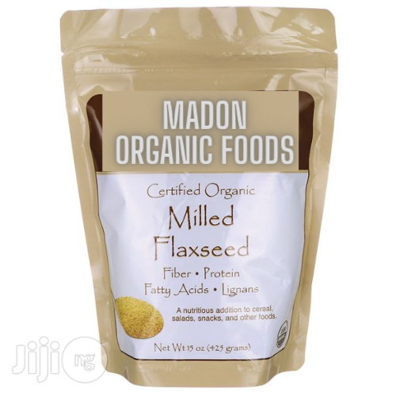
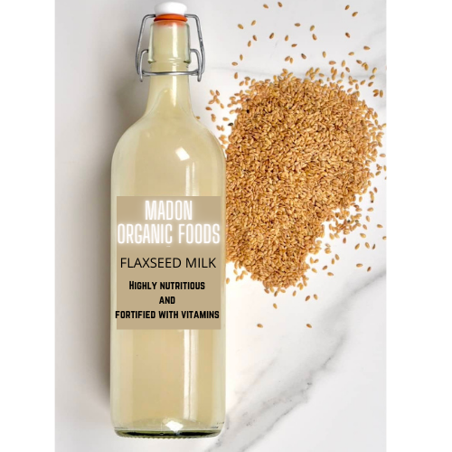

Products
-
Flax Seed Powder 500g
MADON MILLED FLAXSEED ORGANIC FOODS Just two tablespoons supply: • 3 grams Omega-3 Alpha-Linolenic Acid (ALA)• 1 gram Omega-6 Linoleic Acid• Lignans Two tablespoons supply as much oil as one-half tablespoon of flax oil plus fiber, protein, and immune supporting lignans. Just sprinkle on cereals, salads or soups, or add to your favorite recipes for a nourishing boost. This delightful powder is certified organic and GMO-free. Nutrition Facts Serving Size 2 Tablespoons (15 grams) Servings Per Container Approximately 28 Amount Per Serving % Daily Value* Calories 90 Calories from Fat 60 Total Fat 7 grams 11% Saturated Fat 0.5 grams 3% Trans Fat 0 grams Polyunsaturated Fat 5 grams Monounsaturated Fat 1 gram Sodium 0 mg 0% Total Carbohydrate 4 grams 1% Dietary Fiber 3 grams 12% Sugars 1 gram Protein 3 grams Not a significant source of cholesterol, vitamin A, vitamin C, calcium, or iron. *Percent Daily Values are based on a 2,000 calorie diet. Your daily values may be higher or lower depending on your calorie needs. Calories 2,000 2,500 Total Fat Less than 65 grams 80 grams Saturated Fat Less than 20 grams 25 grams Cholesterol Less than 300 mg 300 mg Sodium Less than 2,400 mg 2,400 mg Total Carbohydrate 300 grams 375 grams Dietary Fiber 25 grams 30 grams Calories per gram: Fat 9 Carbohydrate 4 Protein 4 Ingredients: Certified organic cold-milled flaxseed (non GMO). Solvent free. Suggested Use: Sprinkle 2 tablespoons on cereal, salads, snacks, or mix with your favorite foods. Reseal and refrigerate after opening. Best if used within 45 days after opening. May be resealed and frozen to extend shelf life. NOTE: Product contains a desiccant packet to maintain freshness. Do not eat desiccant packet. No artificial colors, flavors, preservatives, or additives.
Pricing: 3000 Naira
-
Flax Seed Powder 1kg
Just two tablespoons supply: • 3 grams Omega-3 Alpha-Linolenic Acid (ALA)• 1 gram Omega-6 Linoleic Acid• Lignans Two tablespoons supply as much oil as one-half tablespoon of flax oil plus fiber, protein, and immune supporting lignans. Just sprinkle on cereals, salads or soups, or add to your favorite recipes for a nourishing boost. This delightful powder is certified organic and GMO-free. Nutrition Facts Serving Size 2 Tablespoons (15 grams) Servings Per Container Approximately 28 Amount Per Serving % Daily Value* Calories 90 Calories from Fat 60 Total Fat 7 grams 11% Saturated Fat 0.5 grams 3% Trans Fat 0 grams Polyunsaturated Fat 5 grams Monounsaturated Fat 1 gram Sodium 0 mg 0% Total Carbohydrate 4 grams 1% Dietary Fiber 3 grams 12% Sugars 1 gram Protein 3 grams Not a significant source of cholesterol, vitamin A, vitamin C, calcium, or iron. *Percent Daily Values are based on a 2,000 calorie diet. Your daily values may be higher or lower depending on your calorie needs. Calories 2,000 2,500 Total Fat Less than 65 grams 80 grams Saturated Fat Less than 20 grams 25 grams Cholesterol Less than 300 mg 300 mg Sodium Less than 2,400 mg 2,400 mg Total Carbohydrate 300 grams 375 grams Dietary Fiber 25 grams 30 grams Calories per gram: Fat 9 Carbohydrate 4 Protein 4 Ingredients: Certified organic cold-milled flaxseed (non GMO). Solvent free. Suggested Use: Sprinkle 2 tablespoons on cereal, salads, snacks, or mix with your favorite foods. Reseal and refrigerate after opening. Best if used within 45 days after opening. May be resealed and frozen to extend shelf life. NOTE: Product contains a desiccant packet to maintain freshness. Do not eat desiccant packet. No artificial colors, flavors, preservatives, or additives.
Pricing: 5500 Naira
-
Flax Seed Milk Plus 100Cl
1 glass cup per serving. Flaxseed milk is arguably better for the environment than other dairy-free milk options, such as almond milk. As it takes a fraction of the water needed by certain nuts (and obviously dairy as well), to grow the plant. In just one tablespoon of flaxseed, they are good sources of protein, carbs, and fiber. The seeds are also full of omega-3 fatty acids as well as a variety of vitamins and minerals, including Vitamin B1, Magnesium, Phosphorus, and more. The high level of fiber is good for us in several ways. Flax seeds are high in fiber with two types of fiber – soluble and insoluble fiber. These work together to improve gut health and digestion, as well as having a positive effect on blood sugar levels and cholesterol.
Pricing: 5000 Naira